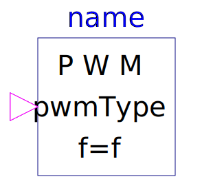

.
Modelica
.
Electrical
.
PowerConverters
.
DCAC
.
Control
.
PWM
Information
Let the user choose the PWM type from:
Space Vector pulse width modulation
Intersective pulse width modulation
Generated at 2020-06-05T21:39:08Z by
OpenModelica 1.16.0~dev-442-g2e5bc9f